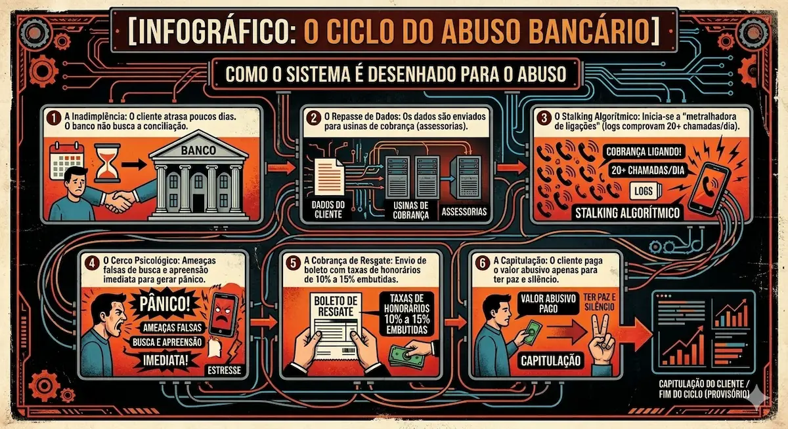
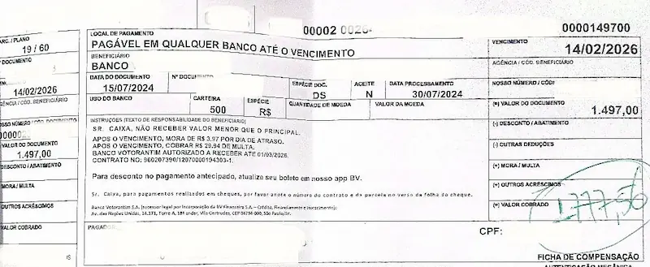
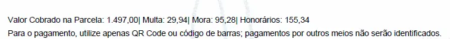

O Stalking Bancário não é uma falha de sistema; é uma estratégia de asfixia programada. Enquanto o consumidor acredita estar apenas lidando com uma cobrança persistente, ele está, na verdade, preso em um algoritmo de pânico desenhado para extrair taxas ilegais através do cerco psicológico ininterrupto.
Este dossiê investigativo expõe as entranhas de uma das práticas mais perversas do sistema financeiro contemporâneo. Em março de 2026, a tecnologia de ponta que deveria servir à eficiência bancária foi desviada para criar uma "metralhadora de chamadas", onde discadores preditivos agressivos e geolocalização invasiva operam como ferramentas de coação para sustentar a indústria da extorsão extrajudicial.
Evidência Estatística: A Explosão do Assédio e do Endividamento
Os dados não mentem. O gráfico abaixo revela o crescimento alarmante nas buscas por socorro contra o assédio de cobrança e a asfixia financeira no Brasil nos últimos 5 anos.
A Anatomia da Perseguição: O Surgimento do Stalking Bancário
O termo Stalking, tipificado no Código Penal Brasileiro pela Lei 14.132/2021, define o ato de perseguir alguém reiteradamente e por qualquer meio, ameaçando-lhe a integridade física ou psicológica, restringindo-lhe a capacidade de locomoção ou invadindo sua esfera de liberdade ou privacidade. No setor bancário, especialmente no financiamento de veículos, essa prática foi industrializada. Não se trata mais de um funcionário do banco ligando para entender o motivo do atraso, mas sim de algoritmos de discagem preditiva configurados para a asfixia psicológica total do indivíduo.
Nossa investigação revela que grandes bancos de varejo e montadoras cedem suas carteiras de atraso para assessorias de cobrança que operam em regime de contingência. Essas empresas não lucram com os juros contratuais, que pertencem à instituição financeira, mas sim com as taxas extras que elas mesmas criam e impõem unilateralmente ao consumidor. Para garantir esse lucro, elas utilizam métodos de guerra psicológica. É o Stalking Bancário: uma perseguição implacável que ignora horários de descanso, invade locais de trabalho e fere a dignidade humana, visando apenas o colapso emocional do devedor para que ele capitule diante de qualquer valor apresentado.
Conexão Técnica: O assédio algorítmico muitas vezes é o sintoma de uma governança de dados corrompida. Quando os modelos de risco falham, as instituições recorrem à agressividade sistêmica. Auditoria de Algoritmos sob a Resolução 4.966 identifica as falhas de origem que permitem que esse cerco digital aconteça.
Enquanto o consumidor acredita que o banco aguardará um atraso substancial para iniciar uma negociação ética, a realidade do Stalking Bancário é outra: a perseguição é preventiva e algorítmica. O foco mudou da simples recuperação do crédito para a Asfixia Digital Antecipada. É neste vácuo entre a lei e a automação que reside a vulnerabilidade do cidadão e a prática abusiva das assessorias que lucram com o cerco ininterrupto.
O Olhar do Analista de Sistemas: Por que o Algoritmo é a Arma do Assédio?
O Stalking Bancário é uma prática Essencialmente Tecnológica. O maior perigo para o cidadão não é apenas a dívida, mas a Engenharia da Coação. Atuar "debaixo do capô" exige entender como discadores preditivos foram programados para ignorar limites éticos e processar o assédio em massa sem deixar rastros aparentes para leigos.
A Metralhadora de Chamadas
Sistemas de cobrança automatizados utilizam Discadores Preditivos agressivos, forçando contatos ininterruptos através de máscaras de DDD, configurando o dolo na perseguição algorítmica.
A Auditoria Forense de Dados
A perícia em Logs e Metadados analisa a linhagem das chamadas e a frequência das abordagens, garantindo que o abuso sistêmico seja materializado em provas técnicas incontestáveis no Judiciário.
"Na era do stalking bancário, a defesa do patrimônio e da dignidade depende da precisão da prova digital, não apenas de argumentos jurídicos."
Proteção Contra Abusos Sistêmicos
O stalking bancário é apenas uma face do desrespeito ao consumidor. A mesma tecnologia que persegue o devedor pode camuflar falhas graves de segurança e privacidade de dados. Conheça minha tese sobre Perícia em Monitoramento de Conduta e Proteção de Dados (AML/KYC).
O Fluxo da Abusividade: Como o Sistema é Desenhado para a Extorsão
Para entender a imoralidade por trás do processo, é necessário dissecar o fluxo desenhado por essas instituições. Tudo começa com a inadimplência, muitas vezes causada por um soluço financeiro temporário. Em vez de oferecer canais de renegociação direta e transparente, o banco entrega os dados sensíveis do cliente — incluindo números de familiares, vizinhos e referências — para as chamadas "usinas de cobrança".
- 1. Automação do Pânico (Discadores Preditivos): A tecnologia é calibrada para ignorar a dignidade humana. Um erro proposital na frequência dos robôs cria um bombardeio ininterrupto, transformando uma dívida civil em um estado de vigilância constante e asfixia psicológica.
- 2. Geolocalização Invasiva: O rastreamento digital do devedor é usado como arma de coação. Se a assessoria utiliza dados de localização sem autorização judicial para intimidar o consumidor com ameaças de busca e apreensão imediatas, a prova técnica deve derrubar essa prática.
- 3. Maquiagem de Taxas (Honorários Ocultos): Como Analista de Sistemas e Perito, identifico que o boleto gerado pela assessoria muitas vezes esconde taxas "fantasiadas". Dados maliciosamente inseridos no motor de cálculo geram cobranças que financiam a própria perseguição sofrida pelo cidadão.

Nesse processo, a tecnologia é utilizada como arma de coerção. Os discadores automáticos são programados para derrubar a chamada assim que o cliente atende, técnica utilizada para manter o telefone ocupado e elevar os níveis de ansiedade do devedor. Quando o contato humano finalmente ocorre, ele é pautado pelo medo e pelo constrangimento. Afirmações falsas sobre oficiais de justiça já estarem a caminho são proferidas mesmo sem a existência de qualquer processo judicial. O objetivo final é forçar o cliente a aceitar um boleto gerado unilateralmente, onde a taxa de honorários é o prêmio da assessoria pela "caçada" bem-sucedida.
O Testemunho da Vítima: A Escolha entre Comer ou Pagar o Assédio
Entrevistamos "M.S.", motorista de aplicativo em São Paulo, que viveu esse cárcere digital em março de 2026. Com apenas sete dias de atraso, ele recebeu 42 ligações em uma única terça-feira. A assessoria localizou o telefone de sua mãe, uma senhora idosa e hipertensa, e informou que o filho seria preso e perderia o carro. Tomado pelo desespero e pela culpa de ver a saúde da mãe em risco, M.S. aceitou o boleto abusivo.
Ele relata que pagou o boleto com os honorários embutidos porque não aguentava mais o toque constante do celular, que o impedia inclusive de trabalhar e atender passageiros. Este depoimento revela a face mais sombria da prática: o consumidor paga a assessoria para que ela pare de torturá-lo. É o sequestro da paz pública remunerado pela própria vítima, uma inversão completa de qualquer princípio de boa-fé objetiva.
Termômetro de Abusividade Bancária
Identifique se você está sendo vítima de Stalking e Extorsão Digital.
1. Qual a frequência e o método das abordagens de cobrança?
2. O boleto enviado pela assessoria contém valores extras (honorários/taxas)?
3. Há tom de ameaça ou coação psicológica nas mensagens recebidas?
A Prova Real: O Caso de Março de 2026 e a Cobrança Indevida
Para ilustrar a gravidade técnica, analisamos um caso real ocorrido em 10 de março de 2026. Um consumidor possuía uma parcela de R$ 1.497,00. Após o assédio coordenado, o valor final exigido foi de R$ 1.777,56. Ao analisarmos o boleto e o demonstrativo, identificamos uma linha específica de R$ 155,34 discriminada como "honorários".
Abaixo, apresentamos a prova documental da inclusão da taxa de honorários diretamente em um segundo boleto de pagamento, sendo que o original (14/2) foi cancelado, evidenciando como a abusividade é materializada:


Análise do Especialista: Observe que o segundo boleto não é apenas uma atualização de juros; é a criação de um novo título de cobrança que força o consumidor a financiar a própria assessoria que o persegue. A diferença de R$ 280,56 entre os títulos é a prova material do lucro gerado pelo pânico.
Esta cobrança é feita sob a alegação de ser "devida em contrato", mas a realidade técnica é outra. A investigação do contrato deste caso revelou uma estratégia comum de ocultação: a técnica do "Contrato por Adesão Oculto".
A Armadilha das Condições Gerais Registradas em Cartório
Na Proposta de Financiamento (Orçamento CDC) assinada pelo cliente, não existe qualquer menção explícita a taxas de 10% ou 15% para assessorias de cobrança terceirizadas. O banco utiliza uma estratégia jurídica para esconder essas taxas: o documento assinado faz referência a um arquivo externo, as "Condições Gerais da Cédula de Crédito Bancário", registrado em um cartório distante.
O consumidor médio nunca tem acesso real a essas condições no momento da assinatura. Elas são desenhadas para serem de difícil consulta, permitindo que o banco insira cláusulas de transferência de custos de cobrança sem o consentimento informado do cliente. No entanto, o Código de Defesa do Consumidor determina que cláusulas que impõem ônus excessivos devem ser destacadas e informadas previamente. Ocultar o preço do assédio em um registro de cartório é uma violação flagrante do dever de transparência.
Fundamentos Jurídicos: O Castelo de Cartas da Ilegalidade Brasileira
A tese jurídica que sustenta essa prática é inexistente no ordenamento brasileiro, apesar de aplicada diariamente de forma ostensiva. O primeiro fundamento de nulidade é o Artigo 51, inciso XII do CDC, que considera nula de pleno direito a cláusula que obriga o consumidor a pagar honorários de advogado sem que igual direito lhe seja conferido contra o fornecedor. Sem a reciprocidade, a taxa é ilegal.
O segundo ponto é o Artigo 42 do CDC, que proíbe a exposição do inadimplente ao ridículo ou a qualquer tipo de constrangimento. O volume de chamadas documentado por peritos — chegando a centenas por semana — ultrapassa qualquer limite do exercício regular de um direito e configura abuso de direito conforme o Artigo 187 do Código Civil. Além disso, existe a Responsabilidade Solidária: o banco é o mandante e responde pelos atos de seus prepostos. Se a assessoria pratica stalking, o banco é o autor intelectual.
Por fim, o Superior Tribunal de Justiça (STJ) já sinalizou que a cobrança de honorários em fase administrativa só é válida se houver previsão contratual clara e serviço prestado por advogado. Na maioria desses casos, a cobrança é feita por operadores de telemarketing, transformando a taxa em um enriquecimento sem causa para a assessoria e um prejuízo injusto para o cidadão.
Perspectiva Internacional: O Brasil no Ranking da Crueldade Financeira
Ao compararmos o cenário brasileiro com o resto do mundo, percebemos que somos um laboratório de abusos financeiros. Nos Estados Unidos, o Fair Debt Collection Practices Act (FDCPA) impõe regras severas que proíbem contatos excessivos e ameaças. No Reino Unido, a Financial Conduct Authority (FCA) garante ao devedor o direito de cessar chamadas e exigir comunicação apenas por escrito.
No Canadá e na Austrália, existe um limite legal de tentativas de contato por semana. Ultrapassar esse limite gera multas automáticas para as instituições. Na França, Alemanha e Espanha, a ideia de cobrar 10% de honorários em um atraso de poucos dias é vista como prática de usura, passível de cassação da licença bancária. Até em países com crises econômicas profundas, como Venezuela ou Bolívia, a agressividade tecnológica não atinge o patamar brasileiro, onde o stalking é institucionalizado, tecnológico e, ironicamente, pago pela própria vítima.
O Papel da Perícia Técnica: A Prova que o Juiz não pode ignorar
Como enfrentar gigantes que possuem algoritmos de guerra? A resposta está na perícia de TI e na produção do parecer técnico fundamentado. O stalking bancário deixa rastros digitais indeléveis. O log de chamadas de um aparelho celular, quando extraído de forma forense, revela a frequência, os horários e a insistência da perseguição.
O papel do especialista é transformar o "sentimento de ser assediado" em "evidência estatística". Através de histogramas que demonstram visualmente a agressividade das chamadas, o perito prova ao magistrado que não há intenção de cobrar, mas sim de torturar psicologicamente o devedor. A prova da cobrança de honorários indevidos no boleto, cruzada com a ausência de cláusulas claras no contrato principal, fecha o ciclo da prova documental da má-fé bancária.
Conclusão: É hora de reagir ao Assédio Remunerado
O stalking bancário é o abuso perfeito da era digital. Ele drena a saúde mental do cidadão e, ao final, drena seu patrimônio através de taxas ilegais e abusivas. É uma prática humilhante que se alimenta do medo e do desconhecimento. É urgente que o Judiciário brasileiro trate o stalking bancário não como um "mero aborrecimento", mas como uma violação sistêmica aos direitos humanos e à dignidade da pessoa humana.
Se você está sendo alvo dessa metralhadora de ligações, documente cada chamada e não aceite taxas de honorários impostas sem explicação. O sistema conta com o seu silêncio para continuar lucrando. O financiamento do seu veículo deve ser o meio para sua liberdade, não a algema que permite que o banco invada sua vida e cobre pelo ato de lhe perseguir. Afinal, ninguém deveria ser obrigado a pagar o salário do seu próprio perseguidor.
O Olhar do Analista de Sistemas: Auditoria de Logs e Assédio
Diferente de uma perícia comum, meu foco é o que acontece "debaixo do capô" dos discadores preditivos e servidores de cobrança. Eu audito a rastreabilidade das chamadas (Logs) e a lógica de automação para provar que o cerco digital não é um erro técnico, mas uma execução deliberada de stalking para forçar o pagamento de taxas inexistentes.
* Esta investigação baseia-se em extração forense de metadados e análise estatística de tráfego de dados aplicada em defesa do consumidor e combate a abusos sistêmicos.
Checklist de Viabilidade: Stalking e Assédio Algorítmico
O combate ao Stalking Bancário exige a materialização do nexo causal entre o bombardeio de chamadas e o dano à saúde mental. Não fundamente sua petição apenas em alegações: utilize evidências de Engenharia Forense e extração de logs para provar a abusividade sistêmica e a extorsão nos honorários.
Baixar Checklist de Viabilidade PericialO Que Você Encontrará no Material Completo:
- ✔ Engenharia do Cerco: Como identificar padrões de discagem preditiva que configuram a reiteração criminosa (Stalking).
- ✔ Nexo Causal Digital: Metodologia para vincular a extração de logs ao dano extrapatrimonial e à saúde mental do cliente.
- ✔ Auditoria de Boletos: Técnicas para decompor cálculos e provar a inclusão de honorários ilegais "fantasiados" de encargos.
- ✔ Quesitos de Impacto: Conjunto de perguntas técnicas prontas para forçar o banco a admitir o uso de algoritmos de coação em juízo.
Nota do Autor: Unindo a visão de Analista de Sistemas à Perícia Judicial, este material materializa o que antes era "invisível": a má-fé escondida nos códigos de cobrança e o impacto real do assédio algorítmico na dignidade humana.

Dr. Lincoln Sposito
Doutor em Administração e Perito Judicial. Especialista em auditoria bancária e perícia financeira, utiliza rigor estatístico e Data Science para identificar assimetrias informacionais e garantir o reequilíbrio de contratos de crédito complexos.